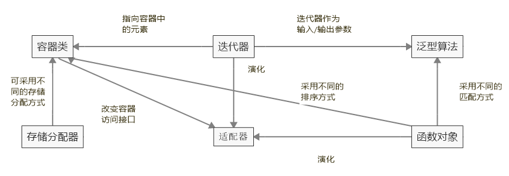
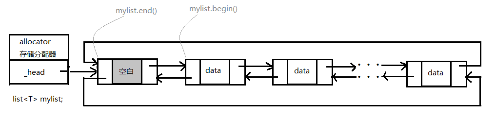
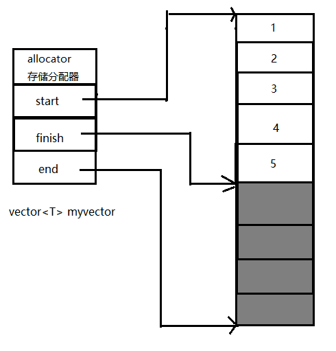

浅谈STL
由于我刚开始学习系统的写博客，个人方面不管是能力还是经验都会有所欠缺，所以肯定会有很多不完善的地方，包括结构安排、要点遗漏、知识错误等等，还请各位批判着看，如有问题，恳请斧正，我将十分感激！
STL(Stardand Template Library)，即标准模板库的简称。于 1994 年 2 月正式成为 ANSI/ISO C++ 的一部分。STL 是一个标准规范，它只是为各种组件定义了一系列统一的访问接口及他们之间搭配使用的一般规则，而没有规定他们的底层实现。因此各开发商都提供自己的 STL 版本，比较著名的有 P.J. Plauger，HP，SGI 等。如无明确说明，本文所指的 STL 均为 C++ 98 标准下的 SGI 版本，下载地址
C++ 标准规定，STL 的头文件都不用扩展名，所以一般 STL 的头文件名称是没有 .h 后缀的。同时，所有的 STL 组件都被纳入到 std 命名空间内，所以在 include 之后要声明 STD 命名空间:
using namespace std;
STL 是一套十分强大的库，基本将我们日常能使用的数据结构和算法封装为模板的形式，这样的好处是该套库有很强的通用性，可以说对任何类型都支持。
而且使用 STL 很方便，避免了在编码过程中重复造轮子的工作，使我们将精力集中在业务的实现逻辑上，而不必纠缠一些细枝末节的东西。比如要对一个整形数组 iarr 进行排序，只需要下面这句代码即可：
#include<algorithm>
using namespace std;
sort(iarr,iarr+sizeof(iarr)/sizeof(iarr[0]));
这样，我们便可以不用自己编写复杂的排序函数，大大地提高了开发效率。sort 函数的原型到后面说算法的部分再说。
STL 主要由六大组件组成，他们之间的关系如下：

可见，迭代器、存储分配器和函数对象都是为容器服务的。迭代器就像一个指针一样指向容器中某个元素，可以很方便地对其进行存取；存储分配器为容器分配内存空间；
容器
容器类定义在下表所示的头文件中：
| 头文件 | 内容(元素类型均为T) |
|---|---|
| list | 双向链表 |
| vector | 数组 |
| queue | 队列 |
| deque | 双向队列 |
| stack | 栈 |
| set/multiset | 集合 |
| map/multimap | 映射 |
| bitset | 位图 |
| hash_map | hash映射 |
| hash_set | hash集合 |
上表中，stack，queue和deque严格来说并不算是容器，而是容器适配器。因为他们是以其他容器来实现的。为了方便，暂且列在这里。
容器按照其存储元素之间的关系又可以分为序列式容器和关联式容器。以上列表中 set/multiset，map/multimap 属于关联式容器，其他都属于序列式容器。
序列式容器和关联式容器的区别就是，序列式容器里面的元素之间都是有相对的位置关系的，不管是在逻辑上还是在底层实现上他们都有自己的相对位置。因而在序列式容器里面可以使用诸如 push_back(),push_front(),pop_back(),pop_front() 等函数；而关联式容器里面的元素在逻辑上总是无序的，如集合（无序性是数学概念上集合的特性之一）。但为了能在相应的数据结构中存储和附加在容器对象上算法的效率，关联式容器在物理实现上，其元素也是有相对的位置关系的，只不过对 STL 的使用者而言，这一切都是透明的，不会被其察觉。
要注意的是，STL 里的容器都是可以动态增长的。所以为了支持这种特性，容器对象本身是创建在系统栈上，但容器所管理的空间创建在堆上。不过，一般来说，容器类自己会很好地管理这些空间，不会导致诸如内存泄露等问题。
下面说说最常用的几种容器：
list
list 的内部被实现为一个双向循环链表,所以在其中进行 insert，find 等函数的时间复杂度是 O(n)，但 erase 函数为 O(1)。其节点定义如下：
struct _List_node_base {
_List_node_base* _M_next;
_List_node_base* _M_prev;
};
template<class _Tp>
struct _List_node : public _List_node_base {
_Tp _M_data;
};
不得不说，STL 真是博大精深。list 将节点的前后指针和其包含的元素分离开来了，这样会使 list 更具有通用性。以上代码中，_List_node_base 中的 _M_next 和 _M_prev 分别指向节点的后继和前趋节点，将其作为一个 struct 封装，而后被 _List_node 继承。
- list支持的构造方法为
explicit list (const allocator_type& alloc = allocator_type());// (1)
explicit list (size_type n, const value_type& val = value_type(),const allocator_type& alloc = allocator_type());//(2)
template <class InputIterator>
list (InputIterator first, InputIterator last,const allocator_type& alloc = allocator_type());//(3)
list (const list& x);//(4)
下面分别介绍：
(1). 即默认的构造函数，使用 list<int> mylist; 便会调用此构造函数。当然你也可以把 int 换成其他的类型。该函数构造一个空的 list 容器，其中没有任何元素。称为 default constructor。
(2). 构造一个含有 n 个元素的 list 容器，每个元素都是 val 值的拷贝。称为 fill constructor。即构造出来的 list 是满的。
(3). 用尽可能多的 first 和 last 区间之间的元素构造一个 list 容器，每个元素对应于元区间的一个元素，并且元素的相对顺序和原来相同。也称为 range constructor。
(4). 用另一个 list 构造该容器，这两个容器中的元素的值，数量及相对顺序都完全相同。因此这是拷贝构造函数(copy constructor)。
- 析构函数很简单，只有一个：
~list();
该函数析构容器中的所有元素，并释放他们的空间。
- 重载赋值运算符
list& operator= (const list& x);
作用是拷贝 x 中的所有元素到当前链表中。需要注意的是，operator= 函数不是释放掉当前链表的所有节点后再将 x 中的元素插入其中的，而是保留了当前空间，直接覆盖其元素值以减少分配空间的开销。
以上就是 C++ 类里的四大金刚函数。list 类支持的其他成员函数还有：
- 返回迭代器：
| 函数 | 功能 |
|---|---|
| begin | 返回指向链表头的迭代器(public) |
| end | 返回指向链表尾的迭代器(public) |
| rbegin | 返回一个反向迭代器，该迭代器指向反向链表的头部(public) |
| rend | 返回一个反向迭代器，该迭代器指向反向链表的尾部(public) |
- 返回容量：
| 函数 | 功能 |
|---|---|
| empty | 测试 list 是否为空(public) |
| size | 测试 list 的大小(public) |
| max_size | 返回 list 的最大容量(public) |
- 存取元素：
| 函数 | 功能 |
|---|---|
| front | 获取第一个元素(public) |
| back | 获取最后一个元素(public) |
- 修改：
| 函数 | 功能 |
|---|---|
| assign | 修改 list 容器中的元素(public) |
| push_front | 在 list 首部插入元素(public) |
| pop_front | 删除第一个元素(public) |
| push_back | 在 list 尾部插入元素(public) |
| pop_back | 删除最后一个元素(public) |
| insert | 插入元素(public) |
| erase | 删除元素(public) |
| swap | 交换两个元素(public) |
| resize | 改变 list 的大小(public) |
| clear | 清空该 list 容器(public) |
- 操作方法：
| 函数 | 功能 |
|---|---|
| splice | 在容器间转移元素(public) |
| remove | 移除特定的元素(public) |
| remove_if | 移除满足条件的元素(public) |
| unique | 移除重复的元素(public) |
| merge | 合并两个 list 容器(public) |
| sort | 对元素进行排序(public) |
| reverse | 反转 list 容器中的元素(public) |
- 分配空间：
| 函数 | 功能 |
|---|---|
| get_allocator | 分配空间 |
list 的内存映像如下：

由此可以看出，list 只支持顺序存取，而不支持随机存取，因为其底层实现上各元素不是连续存放的。
以上只是对 list 中的成员函数进行了简单的介绍，其中很多函数都是有重载版本的，在此不再一一列举，具有好奇心的读者可移步：www.cplusplus.com ，然后在最上方的搜索栏搜索"list"即可。其实不止是 list，C/C++ 标准库里面的最多内容这里都介绍得非常全面，本文以下即将介绍的各种东东也可以在上面查到。只不过该网站是英文的，英文和我一样挫的读者就多花点时间读一读，还是很值得的！
vector
vector 和 list 一样，也属于序列式容器。vector 既可以随机存取又可以顺序存取，因为它内部被实现为一个可变长数组，所有元素都被集中放在一块内存空间中。
vector内部实现如下：
template <class _Tp, class _Alloc>
class _Vector_base {
public:
typedef _Alloc allocator_type;
allocator_type get_allocator() const { return allocator_type(); }
_Vector_base(const _Alloc&)
: _M_start(0), _M_finish(0), _M_end_of_storage(0) {}
_Vector_base(size_t __n, const _Alloc&)
: _M_start(0), _M_finish(0), _M_end_of_storage(0)
{
_M_start = _M_allocate(__n);
_M_finish = _M_start;
_M_end_of_storage = _M_start + __n;
}
~_Vector_base() { _M_deallocate(_M_start, _M_end_of_storage - _M_start); }
protected:
_Tp* _M_start;
_Tp* _M_finish;
_Tp* _M_end_of_storage;
typedef simple_alloc<_Tp, _Alloc> _M_data_allocator;
_Tp* _M_allocate(size_t __n)
{ return _M_data_allocator::allocate(__n); }
void _M_deallocate(_Tp* __p, size_t __n)
{ _M_data_allocator::deallocate(__p, __n); }
};
可以看出，vector 内部有三个 protected 属性的成员变量：_M_start,_M_finish 和 _M_end_of_storage。分别指向所管理有效元素的开始，结束和所管理空间的尾部(第 20~22 行)。
既然是数组，在插入元素时就有可能没有空余空间。vecto r的管理策略是：如果有足够空余空间，就将待插入元素放入。否则开辟一块更大的空间（原来容量的 2 倍）并将现有元素拷贝过去，然后释放原来的空间并令以上三个指针指向新的空间。
vector 支持的很多操作和 list 一样，对外表现出来的接口也是一样的，只是内部实现不同。
相比于 list，新增的操作有
| 函数 | 功能 |
|---|---|
| capacity | 改变容器大小，修改的是实际容量(public) |
| reserve | 做出所要求的改变(public) |
| operator[] | 存取元素(public) |
| at | 存取元素(public) |
出于节省空间的考虑，vector 内部对 bool 类型进行了特化 vector<bool>，但它与 bitset 支持的很多操作是不同的。
vector 内存映像如图：

迭代器
迭代器可以看成一种『通用指针』，即它可以作用于任何容器上面。而且即便是不同的容器，通过迭代器所表现出来的访问接口都是一样的，这就为我们提供了很大的方便，使得我们不必了解各种容器的底层实现,也不用去记住那些繁杂的各种容器访问接口，就可以访问他们内部的元素。而且使得我们可以编写更具通用性的代码。比如需要遍历 list 中的元素，可以这样写：
typedef my_type list<int>;
my_type obj;
my_type:iterator iter=obj.begin();
for(;iter!=obj.end();++iter){
cout<<*iter<<" ";
}
cout<<endl;
现在我不想访问 list 了，要改成 vector。只需要将 typedef my_type list<int> 改为 typedef my_type vector<int> 就可以了，后面代码完全不需要改动。
但迭代器本身是为了降低容器和泛型算法之间的耦合性而设计的。使得一些通用算法可以作用于各种容器上。具体例子在算法部分再讲。
虽然迭代器对外表现出统一的接口，但 STL 中每个容器都有自己专属的迭代器定义。这是因为各种容器的内部实现不同，而迭代器需要准确地定位到容器中，所以就需要不同的方法来实现。
泛型算法
我个人觉得 STL 中算法是除过容器之外最重要的模块。在 algorithm 头文件中实现了很多通用算法，如排序，查找，交换，拷贝等等。
常用算法如下：
| 函数 | 功能 |
|---|---|
| for_each | 对一个区间内的所有元素使用同一个函数 |
| find find_if find_end find_first_of | 查找 |
| adjacent_find | 查找值相等的相邻元素 |
| **count | count_if** |
| mismatch | 返回两个区间第一个不匹配的元素位置 |
| equal | 两个区间元素是否相等 |
| search search_n | 在区间内搜索 |
| copy | 拷贝元素 |
| copy_backward | 反向拷贝 |
| swap | 交换元素 |
| swap_ranges | 交换区间 |
| iter_swap | 交换两个迭代器指向的元素 |
| replace replace_if replace_copy replace_copy_if | 替换元素 |
| fill fill_n | 填充 |
| generate generate_n | 填充 |
| remove remove_if remove_copy remove_copy_if | 移除 |
| unique unique_copy | 移除重复的元素 |
| reverse reverse_copy | 反转 |
| rotate rotate_copy | 旋转 |
| random_shuffle | 将序列中元素随机排列 |
| partition stable_partition | 将区间分为两部分 |
| sort stable_sort partial_sort partitl_sort_coy | 排序 |
| nth_element | 排序元素 |
| lower_bound upper_bound | 二分查找返回第一个等于给定值的元素位置 |
| upper_bound upper_bound | 二分查找返回最后一个等于给定值的元素位置 |
| equal_range upper_bound | 二分查找返回等于给定值元素的范围 |
| binary_search | 二分查找 |
| merge | 归并排序 |
| inplace_merge | 原地归并 |
| includes | 测试一个已排序的区间是否已经包含了另一个已排序的区间 |
| set_union | 连接两个已排序的区间 |
| set_intersection | 两个区间的交集 |
| set_difference | 两个区间不同的元素 |
| push_heap | 往堆中插入元素 |
| pop_heap | 从堆中弹出元素 |
| make_heap | 建堆 |
| sort_heap | 堆排序 |
| min | 返回最小值 |
| max | 返回最大值 |
| min_element | 返回指向最小值的迭代器 |
| max_element | 返回指向最大值的迭代器 |
| lexicographical_compare | 字典序比较 |
| next_permutation prev_permutation | 全排列 |